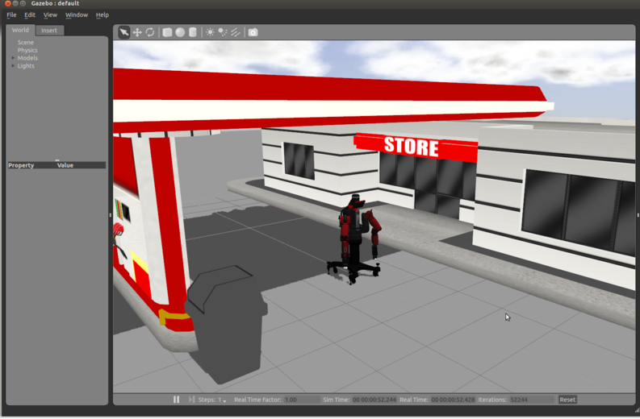

Эта документация предназначена для Gazebo-classic. Нажмите здесь, чтобы ознакомиться с документацией по последнему выпуску Gazebo
Чтобы обеспечить интеграцию ROS с отдельным gazebo, используют набор пакетов ROS: gazebo_ros_pkgs. Эти пакеты предоставляют необходимые интерфейсы для моделирования работы робота в Gazebo с использованием сообщений ROS, сервисов и динамической реконфигурации некоторых функций gazebo_ros_pkgs.
rosrun gazebo_ros spawn_model -file `rospack find MYROBOT_description`/urdf/MYROBOT.urdf -urdf -x 0 -y 0 -z 1 -model MYROBOTЧтобы просмотреть все доступные аргументы для spawn_model, включая пространства имен, свойства trimesh, положения соединений и ориентацию RPY, запустите:
Пример URDF с помощью Baxter: Если у вас еще нет URDF для тестирования, в качестве примера вы можете загрузить пакет baxter_description из репозитория Rethink Robotics baxter_common. Поместите этот пакет в свое рабочее пространство catkin, выполнив:
git clone https://github.com/RethinkRobotics/baxter_common.gitТеперь у вас должен быть URDF-файл с именем baxter.urdf, расположенный в файле baxter_description/urdf/, и вы можете запустить:
rosrun gazebo_ros spawn_model -file `rospack find baxter_description`/urdf/baxter.urdf -urdf -z 1 -model baxterвы должны увидеть что-то похожее на: 
Чтобы интегрировать это непосредственно в файл запуска ROS, снова откройте файл myrobot_gazebo/launch/YOUROBOT.launch и добавьте следующее перед тегом </launch>:
<!-- Spawn a robot into Gazebo --> <node name="spawn_urdf" pkg="gazebo_ros" type="spawn_model" args="-file $(find baxter_description)/urdf/baxter.urdf -urdf -z 1 -model baxter" />Запустив этот файл, вы должны увидеть те же результаты, что и при использовании rosrun.
XACRO Example with PR2:
Если ваш URDF не в формате XML, а в формате XACRO, вы можете внести аналогичные изменения в свой файл запуска. Вы можете запустить этот пример PR2, установив этот пакет:
для ROS Jade:
sudo apt-get install ros-jade-pr2-commonЗатем добавьте это в свой файл запуска, созданный ранее в этом руководстве:
<!-- Convert an xacro and put on parameter server --> <param name="robot_description" command="$(find xacro)/xacro.py $(find pr2_description)/robots/pr2.urdf.xacro" /> <!-- Spawn a robot into Gazebo --> <node name="spawn_urdf" pkg="gazebo_ros" type="spawn_model" args="-param robot_description -urdf -model pr2" />Запустив этот файл, вы должны увидеть PR2 на заправочной станции.
Чтобы реализовать этот метод, вы должны создать новую базу данных моделей, содержащую только одного вашего робота. Это не самый простой способ загрузить ваш URDF в Gazebo, но он позволяет избежать необходимости хранить две копии URDF вашего робота на вашем компьютере. Если приведенные ниже инструкции вас смущают, обратитесь к документации по базе данных моделей Gazebo, чтобы понять, почему требуются эти шаги.
Мы предполагаем, что ваша файловая иерархия ROS workspace настроена так, как описано в предыдущих разделах. Единственное отличие заключается в том, что теперь файл model.config добавлен в ваш пакет MYROBOT_description следующим образом:
../catkin_ws/src
/MYROBOT_description
package.xml
CMakeLists.txt
model.config
/urdf
MYROBOT.urdf
/meshes
mesh1.dae
mesh2.dae
...
/materials
/plugins
/cad
Эта иерархия специально адаптирована для использования в качестве базы данных моделей беседок с помощью следующих папок/файлов:
model.config
У каждой модели должен быть файл model.config в корневом каталоге модели, содержащий метаинформацию о модели. В общем, скопируйте этот код в файл model.config, заменив MYROBOT.urdf на свое имя файла:
<?xml version="1.0"?>
<model>
<name>MYROBOT</name>
<version>1.0</version>
<sdf>urdf/MYROBOT.urdf</sdf>
<author>
<name>My name</name>
<email>name@email.address</email>
</author>
<description>
A description of the model
</description>
</model>
В отличие от SDFS, версия тега не требуется, когда он используется для URDFS. Более подробную информацию смотрите в документации по базе данных моделей Gazebo.
Environment Variable
Наконец, вам нужно добавить переменную окружения в ваш файл .bashrc, которая указывает Gazebo, где искать базы данных моделей. Используя выбранный вами редактор, отредактируйте "~/.bashrc". Проверьте, определен ли у вас уже путь к GAZEBO_MODEL_PATH. Если он у вас уже есть, добавьте его, используя точку с запятой, в противном случае добавьте новый экспорт. Предполагая, что ваша рабочая область Catkin находится в ~/catkin_ws/, ваш путь должен выглядеть примерно так:
export GAZEBO_MODEL_PATH=/home/user/catkin_ws/src/
Посмотреть в Gazebo вручную
Теперь проверьте, правильно ли настроена ваша новая база данных моделей Gazebo, запустив Gazebo:
gazeboИ нажмите на вкладку "Insert" слева. Вероятно, вы увидите несколько различных выпадающих списков, представляющих различные базы данных моделей, доступные в вашей системе, включая онлайн-базу данных. Найдите базу данных, соответствующую вашему роботу, откройте подменю, нажмите на название вашего робота, а затем с помощью мыши выберите место в Gazebo для размещения робота.
Просмотр в Gazebo - запуск roslaunch с базой данных моделей
Преимущество метода model database заключается в том, что теперь вы можете включить своего робота непосредственно в свои файлы world, не используя путь к пакету ROS. Мы будем использовать ту же настройку, что и в разделе "Creating a world file", но изменим файл world:
<?xml version="1.0" ?>
<sdf version="1.4">
<world name="default">
<include>
<uri>model://ground_plane</uri>
</include>
<include>
<uri>model://sun</uri>
</include>
<include>
<uri>model://gas_station</uri>
<name>gas_station</name>
<pose>-2.0 7.0 0 0 0 0</pose>
</include>
<include>
<uri>model://MYROBOT_description</uri>
</include>
</world>
</sdf>
roslaunch MYROBOT_gazebo MYROBOT.launchНедостатком этого метода является то, что ваши пакеты MYROBOT_description и MYROBOT_gazebo не так легко переносятся между компьютерами - вам сначала нужно установить GAZEBO_MODEL_PATH в любой новой системе, прежде чем вы сможете использовать эти пакеты ROS.
<run_depend>gazebo_ros</run_depend>
<export>
<gazebo_ros gazebo_model_path="${prefix}/models"/>
<gazebo_ros gazebo_media_path="${prefix}/models"/>
</export>
"${префикс}" - это то, о чем новые пользователи тоже могут не сразу узнать, и это необходимо здесь.
Также было бы полезно получить некоторую информацию о том, как отлаживать эти пути со стороны ROS, например, что вы можете использовать плагины rospack --attrib="gazebo_media_path" gazebo_ros, чтобы проверить путь к мультимедиа, который будет выбран gazebo.
Как создавать urdf- описание для gazebo здесь